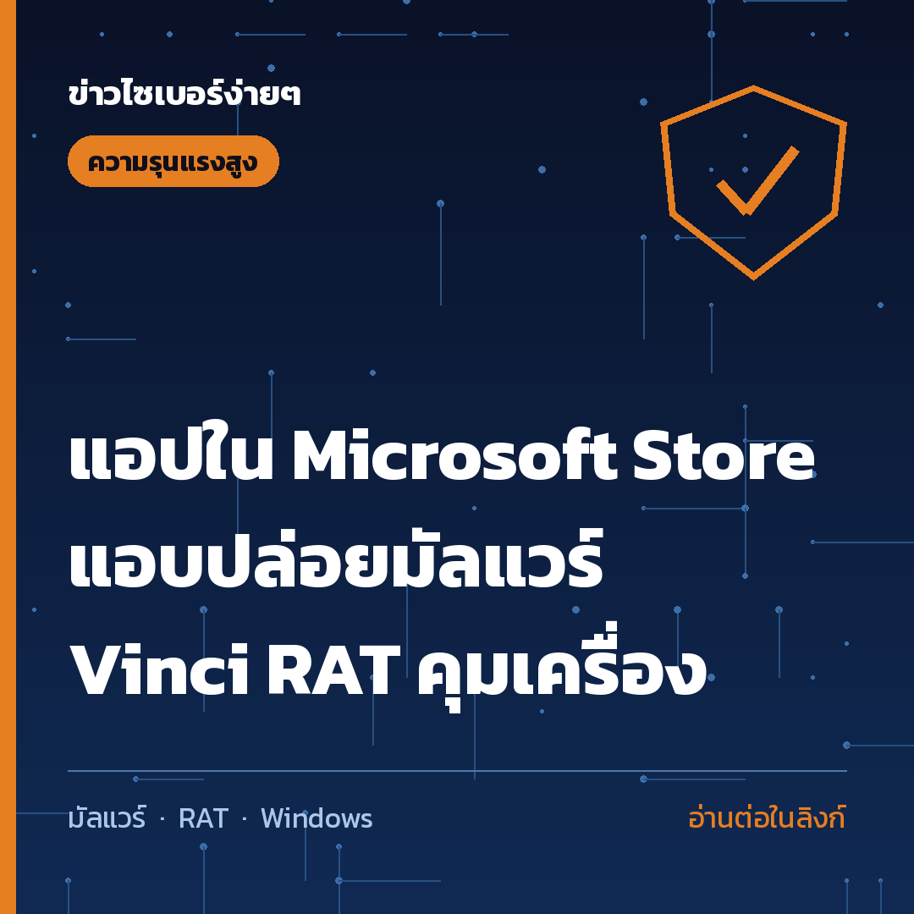

แอปบน Microsoft Store ถูกใช้แอบปล่อยมัลแวร์ Vinci RAT คุมเครื่องจากระยะไกล
สรุปสั้นๆ
นักวิจัยจาก eSentire พบแอปชื่อ Setup Assistant บน Microsoft Store ที่ทำตัวเป็นประตูหลัง แล้วโหลดมัลแวร์ Vinci RAT มาควบคุมคอมพิวเตอร์ของเหยื่อ คนร้ายล่อเหยื่อผ่านเว็บดาวน์โหลดโปรแกรมปลอม เช่น Snipping Tool, Microsoft Teams และ Roblox บทเรียนสำคัญคือ แอปที่อยู่ในสโตร์ทางการก็ไม่ได้ปลอดภัยเสมอไป

📰 เกิดอะไรขึ้น
บริษัทความปลอดภัย eSentire จากแคนาดา เปิดเผยการโจมตีที่เริ่มจากการพาเหยื่อไปยังเว็บปลอมที่อ้างว่าให้ดาวน์โหลดโปรแกรมจับภาพหน้าจอ (snipp.codes-team[.]com) เว็บนี้ให้ไฟล์ชื่อ Snipping-Tool.exe ซึ่งเป็นตัวติดตั้งที่มีลายเซ็นของ Microsoft จริง ทำให้ดูน่าเชื่อถือ
เมื่อเปิดไฟล์ เครื่องจะติดตั้งแอปชื่อ Setup Assistant ที่เผยแพร่บน Microsoft Store โดยผู้พัฒนาชื่อ ETPS Ltd. แอปนี้สร้างด้วย Electron และมีโค้ดที่ถูกทำให้อ่านยาก (obfuscated) มันคอยติดต่อเซิร์ฟเวอร์ควบคุมของคนร้าย (C2) ที่ setup-assistant[.]com และรอรับคำสั่ง PowerShell หรือ JavaScript มารันบนเครื่อง
แอปยังเฝ้าดูโฟลเดอร์ Downloads ของเหยื่อ ถ้าเจอไฟล์ชื่อที่ตรงกับรายการของคนร้าย เช่น MSTeamsSetup.exe หรือ Reader_install.exe ก็จะส่งข้อมูลกลับไปและรันโค้ดที่ได้รับ จากนั้นจะมีสคริปต์ตัวกลาง (stager) ที่ปิดระบบสแกนมัลแวร์ AMSI ของ Windows ตั้ง Scheduled Task ให้ทำงานทุก 10 นาที แล้วดาวน์โหลด Vinci RAT มาติดตั้ง
Vinci RAT เป็นมัลแวร์ที่เขียนด้วย PowerShell และไม่เคยมีรายงานมาก่อน มันเก็บข้อมูลเครื่อง ตรวจว่ามีโปรแกรมป้องกันอะไรบ้าง เปิดช่องให้คนร้ายสั่งงานเครื่องจากระยะไกล ส่งไฟล์เข้าเครื่อง และรันโปรแกรมอันตรายอื่นๆ ได้หลายรูปแบบ ทั้ง EXE, DLL, shellcode และ PowerShell
🔎 ข้อมูลเพิ่มเติมจากแหล่งอื่น
Cybernews รายงานเพิ่มว่า Vinci RAT มีโค้ดประมาณ 800 บรรทัด เก็บข้อมูลอย่างชื่อเครื่อง ชื่อผู้ใช้ เวอร์ชัน Windows เขตเวลา และโดเมน Active Directory และสามารถรันโปรแกรมในหน่วยความจำโดยตรงเพื่อให้ตรวจจับยากขึ้น
eSentire แจ้งแอปนี้ผ่านแบบฟอร์มรายงานการละเมิดของ Microsoft เมื่อ 10 พฤศจิกายน 2026 แต่ได้คำตอบว่า "ไม่ผิดเงื่อนไข" ตอนนี้แอปหายไปจากสโตร์แล้ว แต่ยังไม่ชัดว่าคนร้ายถอนเองหรือ Microsoft เป็นคนลบ แอปนี้เปิดตัวครั้งแรกเมื่อ 1 มิถุนายน 2026 ส่วนโดเมน codes-team[.]com จดทะเบียนตั้งแต่ปลายมีนาคม 2026 และมีโดเมนย่อยที่ปลอมเป็นหน้าดาวน์โหลด Microsoft Teams และ Roblox ด้วย
👥 ใครได้รับผลกระทบ
- ผู้ใช้ Windows ที่ค้นหาและดาวน์โหลดโปรแกรมอย่าง Snipping Tool, Microsoft Teams หรือ Roblox จากเว็บที่ไม่ใช่เว็บทางการ
- ผู้ที่เคยติดตั้งแอป Setup Assistant ของ ETPS Ltd. จาก Microsoft Store
- องค์กรที่อนุญาตให้พนักงานติดตั้งแอปจาก Microsoft Store ได้อย่างอิสระ
✅ ควรทำอย่างไร
- ผู้ใช้ทั่วไป: Snipping Tool มีอยู่ใน Windows อยู่แล้ว ไม่ต้องดาวน์โหลดจากเว็บอื่น และควรดาวน์โหลดโปรแกรมจากเว็บทางการของผู้ผลิตเท่านั้น ระวังลิงก์จากผลการค้นหาหรือโฆษณา
- เปิด Settings > Apps ตรวจดูว่ามีแอปชื่อ Setup Assistant หรือแอปที่ไม่รู้จักหรือไม่ ถ้ามีให้ถอนการติดตั้งและสแกนเครื่องด้วยโปรแกรมป้องกันไวรัส
- อย่าเชื่อว่าแอปปลอดภัยเพียงเพราะอยู่ใน Microsoft Store หรือมีลายเซ็นดิจิทัล ให้ดูชื่อผู้พัฒนาและจำนวนผู้ใช้ก่อนติดตั้ง
- องค์กร: จำกัดการติดตั้งแอปจาก Microsoft Store ด้วย Group Policy, AppLocker, WDAC หรือ Intune และให้ทีมความปลอดภัยตรวจแอปที่ไม่คุ้นเคยก่อนอนุญาต
- ทีมไอที: บล็อกโดเมน codes-team[.]com, setup-assistant[.]com และ monkeysholder[.]info และตรวจหา Scheduled Task แปลกๆ ที่รันทุก 10 นาที รวมถึงสคริปต์ PowerShell ที่พยายามปิด AMSI
📖 คำศัพท์น่ารู้
- RAT (Remote Access Trojan)
- มัลแวร์ที่เปิดให้คนร้ายควบคุมคอมพิวเตอร์ของเราจากระยะไกล เหมือนนั่งอยู่หน้าเครื่องเอง
- C2 (Command-and-Control)
- เซิร์ฟเวอร์ของคนร้ายที่ใช้ส่งคำสั่งไปยังเครื่องที่ติดมัลแวร์ และรับข้อมูลที่ขโมยมา
- AMSI
- ระบบใน Windows ที่ช่วยให้โปรแกรมป้องกันไวรัสตรวจสคริปต์อันตรายได้ ถ้าถูกปิด มัลแวร์จะหลบการตรวจจับได้ง่ายขึ้น
- Electron
- เครื่องมือสร้างแอปบนคอมพิวเตอร์ด้วยเทคโนโลยีเว็บ แอปดังๆ หลายตัวก็ใช้ แต่คนร้ายก็นำมาใช้ได้เช่นกัน
แหล่งอ้างอิง
- Microsoft Store App Found Delivering Vinci RAT Capable of Remote System Control The Hacker News (ข่าวต้นฉบับ)
- Malware found on the Microsoft Store, delivering a powerful remote access trojan (Cybernews) cybernews.com
- Hackers Could Gain Hidden Access to Windows Computers Through Vinci RAT Linked to Microsoft Store (GBHackers) gbhackers.com
- Fake Snipping Tool site led to Microsoft Store backdoor (BetaNews) betanews.com
บทความนี้เรียบเรียงเป็นภาษาไทยโดยใช้ AI ช่วยจากแหล่งข่าวด้านบน โปรดตรวจสอบรายละเอียดจากแหล่งอ้างอิงก่อนนำไปใช้